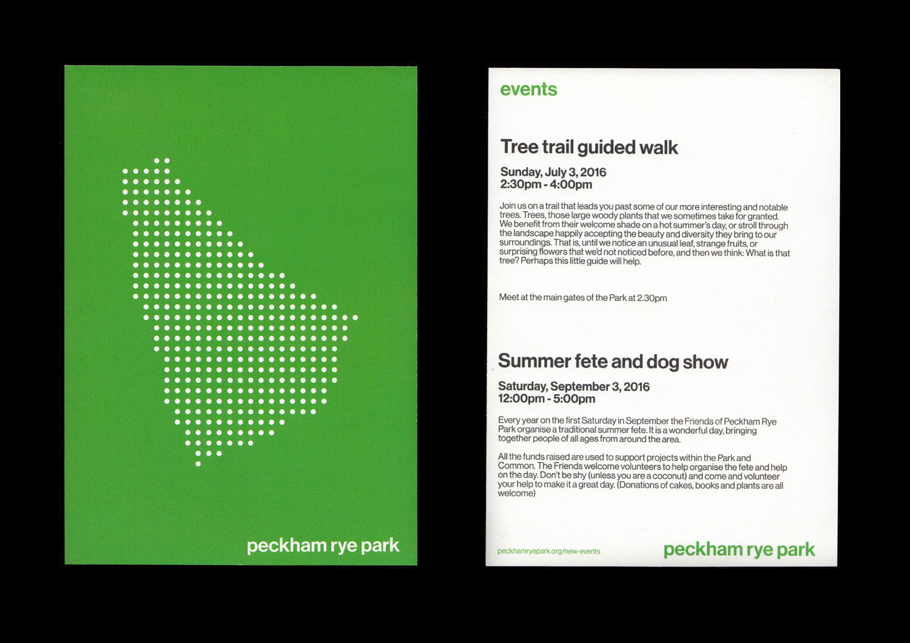

As part of a University brief, I had to re-brand 'Peckham Rye Park'. The identity I created utilises a map of the park represented in dots, allowing it to be used in a mapping system, displaying different areas of interest within. As part of my design and strategy, I created postcards displaying upcoming events to be distributed in the local area.
